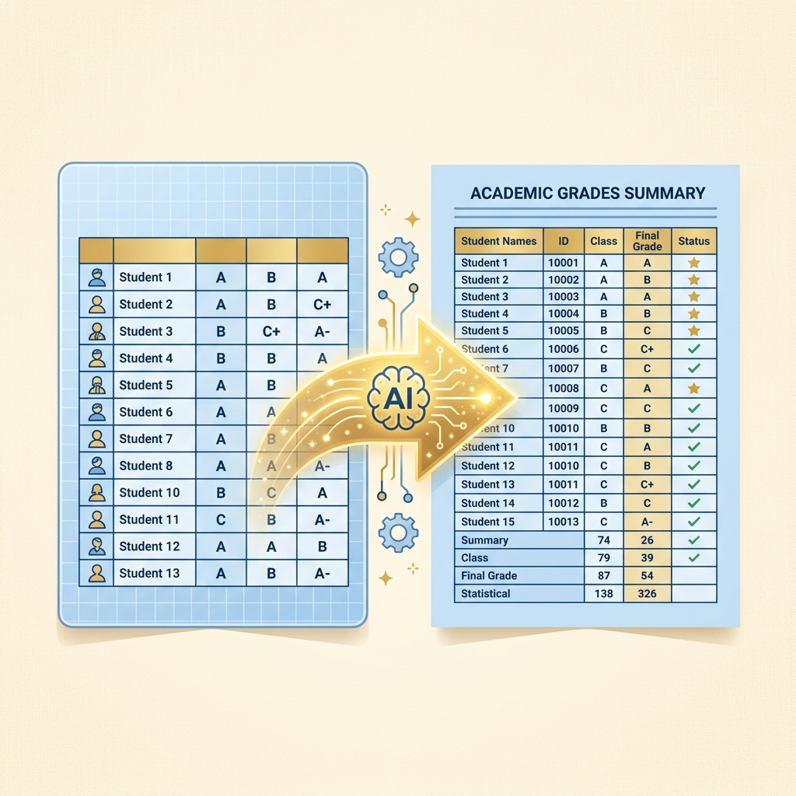

AI Agent Antigravity 研習圖卡
第四章實戰一｜成績登錄行政系統合併
第四單元
第四單元：實戰一 —— 學生習作成績自動登錄與行政系統合併
讀取 Excel 成績回覆檔，自動對齊座號與姓名，填入行政系統空白模版中，生成 XLSX 實體檔案！

學習目標
第四單元核心練習與體驗目標
老師將在此實戰中體驗 AI Agent 在試算表合併中的核心能力：
傳統痛點
手動登記並核對學生成績，需要幾步驟？
以往老師需要對照表單回覆，在 15 位學生中手動輸入並核對 270 個儲存格，過程痛苦、耗時且易錯。
任務目標
由 Antigravity 一鍵自動化合併與登錄
只需下一句口語指令，AI 就會自動對齊並填妥所有成績，留下未交學生空白，直接供行政系統匯入！
輸入成績食材
表單回覆與空白模板
回覆 XLSX 數據與國語/數學的空白成績模板。
自動出菜成品
已填寫的匯出入檔
產生三年2班國語/數學平時成績已填寫的實體檔案。
準備工作
本機資料夾的「食材」配置
請先確保 cards/ch4成績/ 資料夾下有這三個檔案：
1. 學生習作成績登錄表（國習12課、數習9單元） (回覆).xlsx
（內含 15 位填表學生的成績，姓名為虛擬真實姓名，如 01 賈伯斯）
2. 三年2班國語_平時成績匯出入檔_空白.xlsx
（空白的國語成績模板，前5列為元數據）
3. 三年2班數學_平時成績匯出入檔_空白.xlsx
（空白的數學成績模板）
驅動指令
對話框輸入「終極人話指令」
請利用 @ 符號精準提及檔案，並給予清楚指示：
💬 老師輸入指令：
「請讀取專案目錄下 @學生習作成績登錄表（國習12課、數習9單元） (回覆).xlsx、@三年2班國語_平時成績匯出入檔_空白.xlsx 和 @三年2班數學_平時成績匯出入檔_空白.xlsx。
請將回覆檔中的學生成績對齊座號與姓名。在填寫到空白模版時，請自主用 Python 將學生真實姓名進行去識別化（將姓名中間字變更為「○」，如「賈伯斯」轉換為「賈○斯」），以落實學生隱私防護，將結果另存為新檔：
- 三年2班國語_平時成績匯出入檔_已填寫.xlsx
- 三年2班數學_平時成績匯出入檔_已填寫.xlsx
沒有填表成績的學生（例如 10 貝多芬、11 莫札特、15 莎士比亞）其成績保持空白，但姓名同樣需去識別化，並確保前 5 列的元數據格式完全保留。」
後台機制
AI Agent 後台的 ReAct 自主執行流
AI 大腦在此任務中會主動規劃、呼叫工具、觀察結果並進行反思除錯：
後台第一步
1. 大腦思考與讀取檔案
主廚先查看冰箱食材，大腦主動呼叫 view_file 讀取三個 Excel 檔的結構：
# Agent 自動呼叫 Tool Use：
view_file(AbsolutePath=".../學生習作成績登錄表（國習12課、數習9單元） (回覆).xlsx")
view_file(AbsolutePath=".../三年2班國語_平時成績匯出入檔_空白.xlsx")
view_file(AbsolutePath=".../三年2班數學_平時成績匯出入檔_空白.xlsx")
後台第二步
2. 大腦規劃資料比對與轉換
AI 大腦思考如何使用 Python 比對姓名/座號，並映射回覆成績到模板欄位：
student_info[:2] 抽取出座號 01。後台第三步
3. 自動編程與背景執行
AI 自動寫 Python 並跑 run_command，在此之前會彈出人機協同核准框：
# Agent 自動寫出的 Python 迴圈與儲存程式碼：
for idx, row in df_resp.iterrows():
seat_num = row['請選擇您的座號與姓名'][:2]
# 去識別化 (例如將姓名賈伯斯轉換為賈○斯)
masked_name = mask_name(row['姓名'])
match_row = find_row_in_template(seat_num, masked_name)
df_template.iloc[match_row, 3:12] = row[grades_cols]
df_template.to_excel('..._已填寫.xlsx', index=False, header=False)
🌟 老師只需點擊彈出的「核准 (Approve)」按鈕即可背景執行！
後台第四步
4. 自動自我反思與糾錯
執行遇到 pandas 資料類型衝突時，AI 大腦立刻看懂報錯並重寫 code 解決：
第一次報錯 ❌
TypeError: Invalid value '100' for dtype 'str'
因為空白列被推斷為字串，寫入整數時被 pandas 拒絕。
AI 反思與修正 🟢
df = df.astype(object)
大腦立刻反思並加入此行，將欄位轉為通用 object 類型，重跑成功！
成果驗證
雙擊打開已填妥的 XLSX 成果檔案
AI 完美完成出菜，15 位學生成績已自動填妥，格式完好無損！
100% 自動登記完成！
• 姓名座號精確對齊：自動映射填入，無任何看錯行打錯字風險。
• 未交名單保持空白：10 貝○芬、11 莫○特、15 莎○比亞 維持空白，利於追蹤催交。
• 行政對接無阻礙：保留了原始元數據前5列，直接拿去學務系統一鍵匯入！
研習討論
一秒完成一整年的登記成績體力活
以前需要手動對齊並填寫 270 次，現在只需 10 秒鐘 100% 正確。
🤔 研習反思討論：
1. **Agent 自主性的震撼**：AI 不僅僅寫出 Python 程式碼叫老師自己跑，而是在後台自己建立檔案、自己糾錯、直接把已填寫好的實體 Excel 呈獻在您面前。
2. **行政與備課革命**：將這套思維套用到考卷細目表、課堂表現統計、社群經費登帳，能為老師省下無數繁瑣重複的體力勞動！